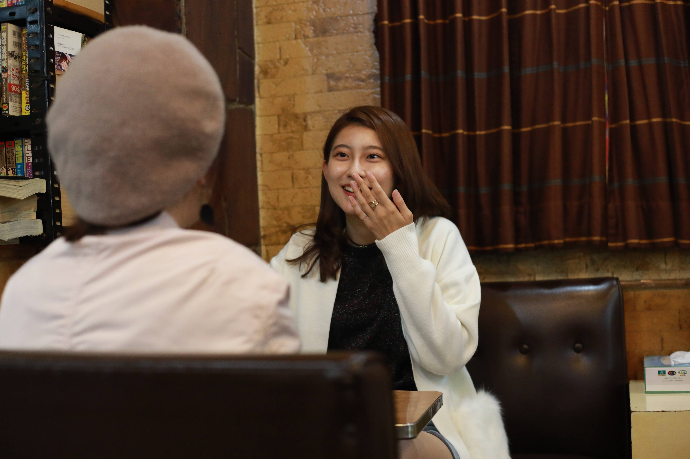
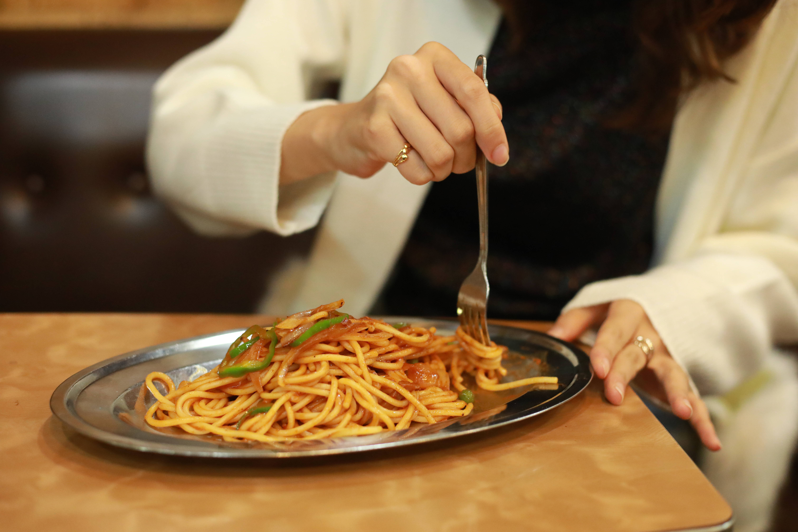
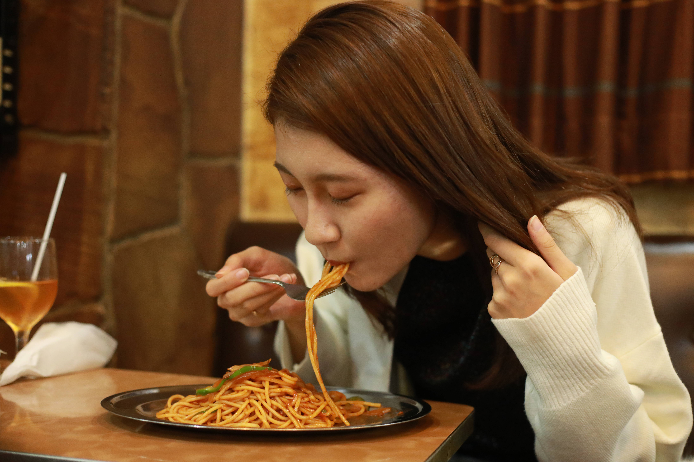
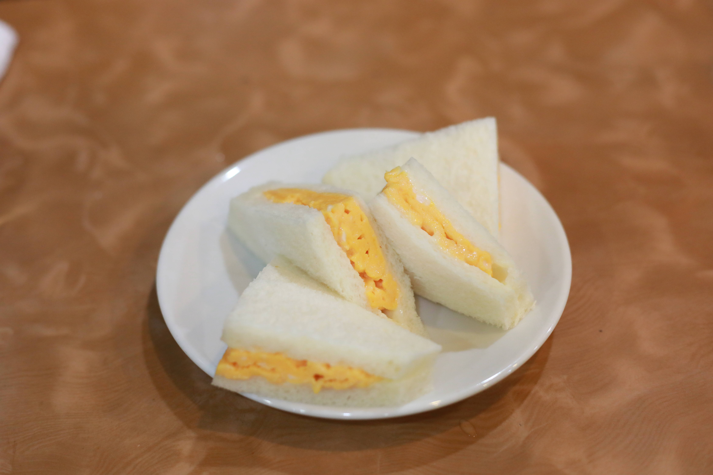
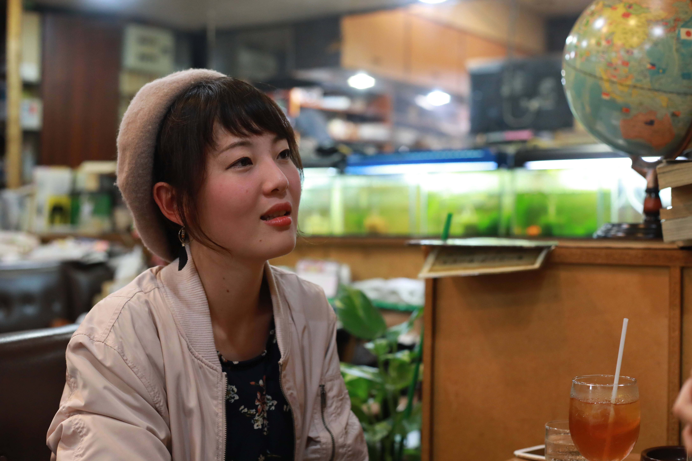
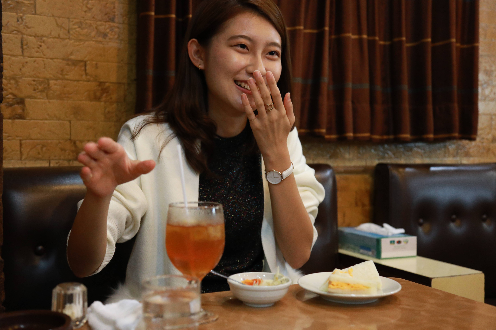
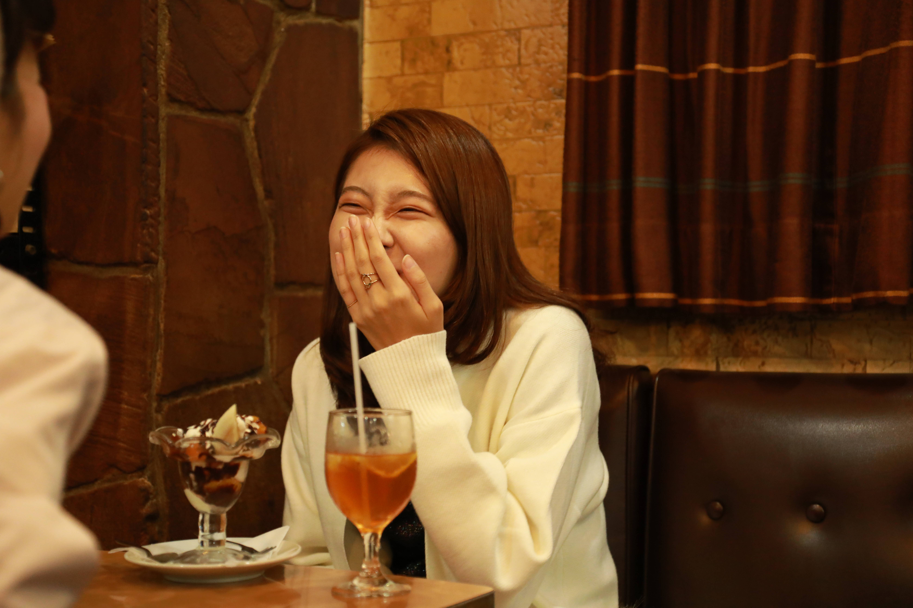
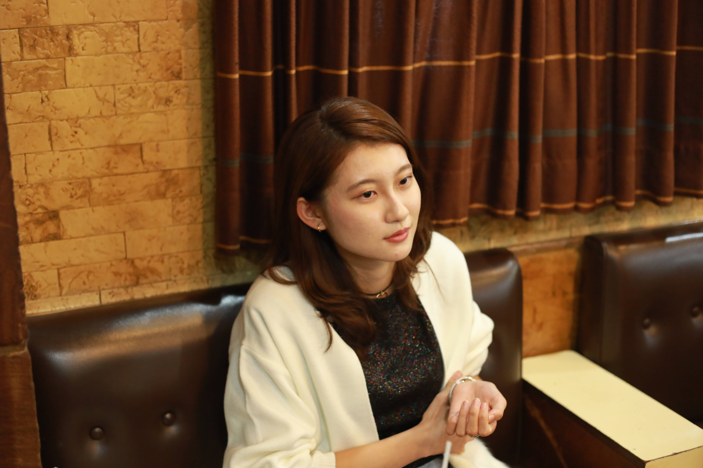
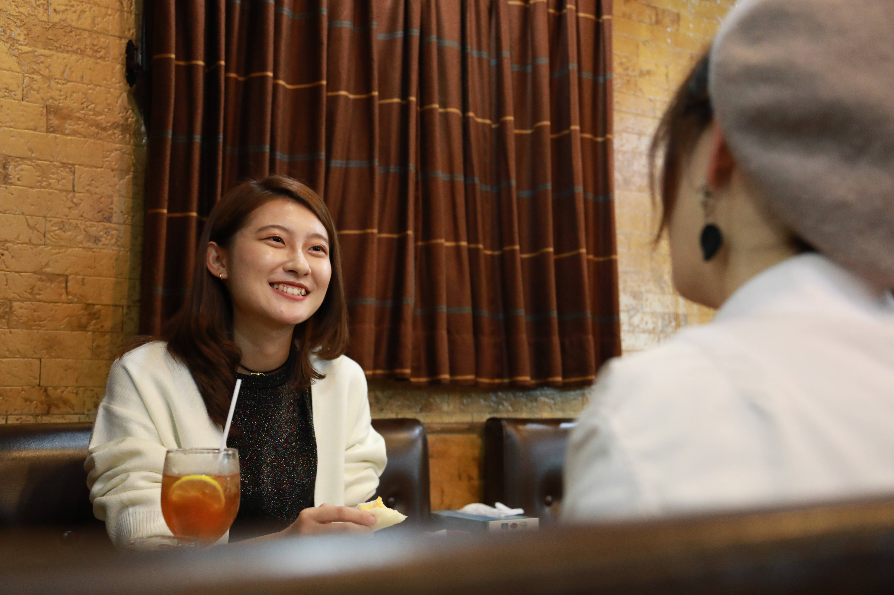

野田キャンってさ...
原木さんはミスの候補者の中で唯一野田キャンパスの方ですよね。野田のこと、ぶっちゃけどう思いました？
何もない。高校は池袋にあったので、ギャップがすごすぎて。 オリエンテーションのときはじめて行ったんですけど、周りにお店しかなかった池袋とうってかわって野田キャンパスは、夜だと真っ暗だし、何もなさすぎてこれからどうしようかと思いました（笑）
すごいディスられてる。（笑）入試の時に行かなかったんですか？
行かなかったですね。試験会場は神楽坂だったので。キャンパスの画像すら見てなくていざ行ってみたら...すごい、川流れてる！運河だ！って。最初二日ぐらいはびっくりしてましたね。どんどん慣れましたけど。
慣れたとは、どんなことに慣れたんですか？
多分都心の大学生だったら空きコマは外に出てランチに行こう〜ってなると思うんですよ。 それが普通だと思っていたのに、野田だと近くにランチに行けるようなお店もあんまりないので最初は抵抗があったんですけど今はなんとも思わないですね。
野田ってすごい...
神楽坂キャンパスに、ミスコンの活動でよく行くんですよ。最初は新鮮でしたけど、慣れてきたら野田の方がいいなって思いますね。
野田キャンのよさは、どこに感じてる？
神楽坂キャンパスは、建物も人もギチギチじゃないですか。 でも野田キャンパスは、理科大なのにTHE ・大学な感じがいいですね。 外に出てキャッチボールとかしてる人もいるし。（笑）
確かに（笑）神楽坂じゃありえないね。
お味はいかが？
原木さん上手に食レポしてください！
はい！頑張りまーす。
 
いただきます 。...うん！！
お味はどうですか？
おいしいです！トマトの濃い風味がすごい出ていて昔ながらのナポリタンって感じで美味しいです。（笑）
すごい美味しそう...！

これもおいしい！ 卵の甘みとマヨネーズの塩加減がちょうどよくないですか！？
うんうん。 私こういう甘い卵大好きなんで最高です！
お！甘党ですか？
甘党です！
こういうごはん朝から食べれたら嬉しいですよね〜
幸せです。
こういう感じの喫茶店とか入られるんですか？
全然入らないです、私チェーン店ばっかりです。こういうお店は敷居が高いなって思っちゃって、普段はチェーン店ばっかりなんですけど...でも、来てみると意外といいですね！
だよね！普段は、モーニングとかカフェに食べに行ったりしてるんですか？
行きますよ！私、コメダ珈琲が大好きで、友達と朝7時くらいに待ち合わせしていったことがありました。すっごく楽しかったです！
朝活だ！朝はやいな～！
なんか、朝から勉強しよう！っていう日に気合入れていく！みたいな！
あそこ、ミルクセーキおいしいんですよ～、それが1日のモチベーションになります。
じゃあ、原木さんは夜型よりも朝型ですか？
どっちもいけますよ～、意外と活動的です。家にいるとだらだらしちゃうんで、常に動いてよう！っていう感じです。
朝から動けるとすっごく満足度高い1日送れるよね～！

広まれ、リケジョ！
ミスコンにでた理由はなんですか？
サイトのプロフィール欄にも書いてあるんですけど、理系や建築のことをたくさん広められたらなって。
理系女子が少ないから、建築って結構面白いのに知られてないことたくさんあるんですよね。
この活動を通して興味をもってくれた人たちと、一緒に仕事をできたらいいなと思って。理系は男性のイメージが強いけど、女性も活躍してるんだよってこと、わかってもらえたらいいなと思います。
すごいいい夢だと思います。建築とかも男性のイメージがありますもんね。
そうなんです。私もともと頭悪くて高校とかでは取り柄そんなになかったんですよ。先生に対しても真面目じゃなかったし（笑） そういう意味でも恩返しできたらなって。
リケジョの魅力を伝えるって発想、すごくいいよね。もし建築に興味を持ってもらえたら、やってもらいたいことってある？
建築に関していうなら、モデルルームとかに行って欲しいですね。机に向かって勉強するのもいいんですけど、実際にこういう空間を作ってみようとか思うのも大事だと思います。
確かに。身近なところからね
衣食住の住のところにみんなが重点を置いてくれたらなって。
楽しみにしてます！原木さんの作る家！
ミスコンにでて努力するようになったこととかってありますか？
なんだろう...食べたいもの食べてるし...大丈夫なのかな自分(笑)
食事制限とかしないんですか？
全然です。欲のままに生きてるので（笑）いつも思うことがあるんですけど、明日死んじゃったらどうしようって考えるんです。だから、やりたいことをやってるって感じ。

LOVE建築！
ミスコンといえばなんとなくアナウンサーのイメージがあるんですが、ミスコン出るっていうのでアナウンサーとか考えなかったんですか？
まったく！やっぱり建築やりたいって思っているのでそこはぶれなくて。というか建築に対する気持ちは一度もぶれたことがないです！やっぱりそれ以外は考えられない。
おお、建築愛！！建築に興味を持ち始めたのはいつからですか？
小学生からですね。
小学生！？そんなときから興味持っていたんですか！何かきっかけがあったんですか？
新聞に入っている間取り図の広告あるじゃないですか。あれを見るのがすごい好きで！あとは、「劇的！ビフォーアフター」を毎週観るのがすごい楽しくて、個人の家を建てたいなと思ってました。ちょっと変わってますよね（笑）
へえー！いいじゃないですか！
だからどちらかというと大きい建築物より、自分の家を建てたいな。
こんな家を建てたい、というのはありますか？
いろいろありすぎてひとつにまとまっているわけではないんですが...全部詰め込んだうえで形にしたいなって思ってます。
じゃあ、いまの構想なら、どんな家がいいですか？
今だったら、そうだな...ロフトのある家！
ロフト！似合いそう！
こども心を忘れない感じが楽しそうですね。

二十歳になったら
原木さんって大人っぽいから、18歳ってことにもずっとびっくりしてるんだけどさ、もうちょっとで二十歳っていうでっかい節目を迎えるじゃん、なんか二十歳までにやりたいなってこと、ある？
旅行行きたいですね、やっぱり！二十歳過ぎてても全然いけるんですけど、社会人になると忙しいから、学生のうちにたくさん行きたいなってのがあって。
そこまで見越してるんですか...
あとは、二十歳までに青春したいですね！
わかる！若さを活かせるのってホントに今のうちじゃん。私もう制服ディズニーとか、二十歳超えちゃうとちょっときついかなーって思って行けない。(笑)
うんうん。やりたいですね制服ディズニー！
逆に二十歳になったらやりたいこととかありますか？
二十歳なったら…すぐ思いつかない。欲望がないのかな。(笑)今が大事なので。(笑)
そっか、すごい素敵な言葉！
なんだろ二十歳になったら…ちょっと大人な格好をしたいです。かっこいい系の服着たいな。私割と年上に見られちゃうので、そうならないように今はかわいい系を着てるんですよ。でも二十歳超えたら、大人っぽいの着るても相応な感じになるじゃないですか。
カッコイイ系ってどんな風になるのかな...私に想像させて、カッコイイ原木さんを！(笑)
なんだろう、黒い革ジャンみたいな！
革ジャン！
ロック系のスキニーデニム！
ロック！楽しみだな～！

マジメなんだよなぁ...
理科大にも、いいところ悪い所あるわけで。理科大生のここがいい、ここがだめとかありますか？
理科大生ってどこ行ってもそんなにやんちゃな感じの人がいないのがいいですよね。でも良くも悪くも真面目すぎる！
もうちょっと遊んでもいいのに...
もうちょっと垢抜けろよ！って？
まあ垢抜けちゃったら理科大生じゃないですけどね。
一同 （笑）
だから逆にそこが良さでもあって。 まわりがあんまり髪とかもキメすぎてないから自分も素でいられたりするのかなって。あんまり気張って行かなくても平気ですね。まあミスコンは気張んないとなんですけど。（笑）
原木さんは理科大と結構相性いいのかもね。（笑）
たしかにそこまで不満はないです。勉強も周りからプレッシャーがないと絶対やらない性格なので、もし理科大じゃなかったら全然勉強しないで卒業しちゃうかもしれない。
理科大に対して、100%で言うと何パーセントくらい満足してる？
場所以外は90ですね。場所は10です。
野田が10になった元凶かな？
田舎すぎる。（千葉県野田市） 場所がもうちょっとだけ都心にあればよかったです。 でも場所以外はそんなに不満はないですね！ 施設も綺麗だし先生たちもわりと質問とかしやすいし。
じゃあ表参道に理科大があったら？
いいですね！100点！(笑)
理科大にあまり不満はない原木さんだけど、これだけは理科大生に言いたい！ってことある？
勉強もだけど遊びも頑張ろう。言いたいです。勉強だけじゃなくて、遊びも頑張ろう。
kよし、じゃあそれで行こう。ビシッと！
理科大生！聞いて～！勉強も遊びも、頑張りましょう！！